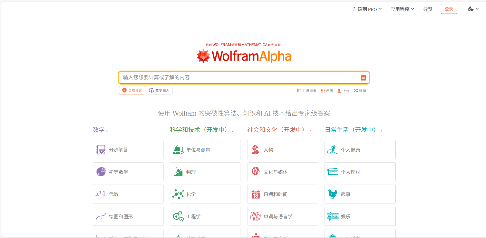
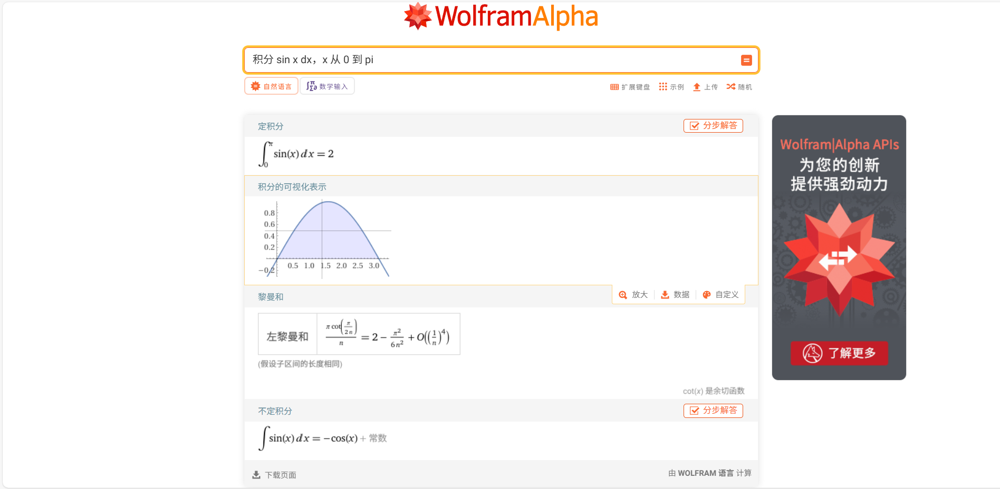
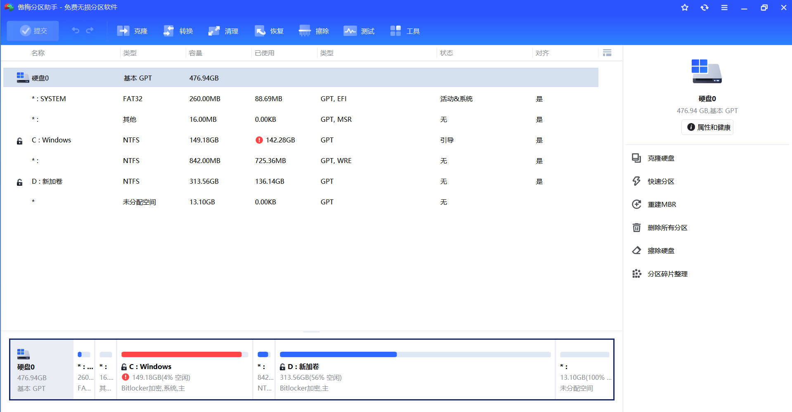
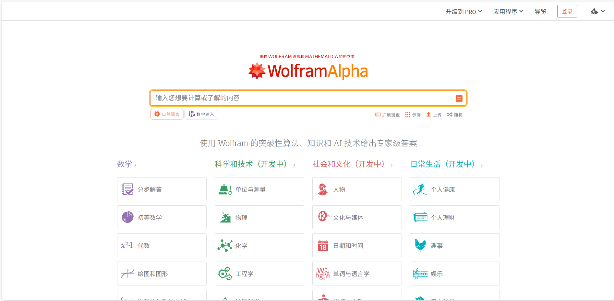
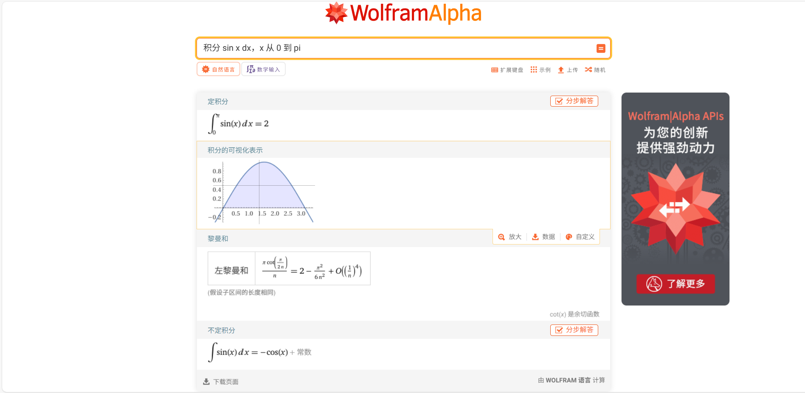
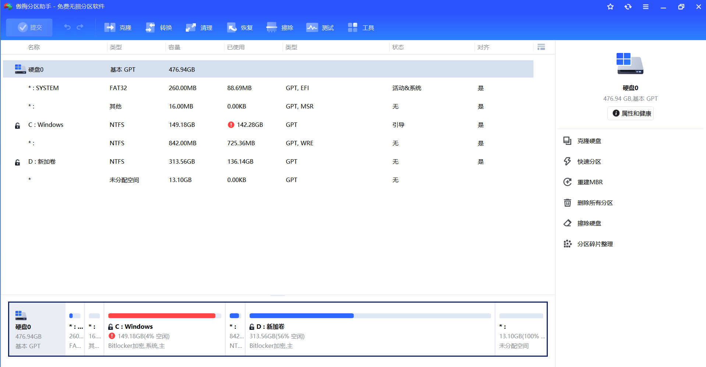

首先第一个是photopea。其实也就是在线的免费Photoshop。毕竟正版的Adobe的是要收费的。
至于有什么用嘛，那当然是在一个过程特别复杂的实验做的结果不理想的时候。稍微润色一下自己或别人的实验结果嘛。
第二个是wolframalpha，一个专精于数据计算的网站。他不只是一个高级计算器，而更像是一个计算方面的专家系统（ES）。支持自然语言输入和数学输入两种方式。
尤其值得称道的是这个网站的可视化功能。这里以求定积分为例，这一部分你们应该也接触过，就是牛顿莱布尼茨公式。可以看出，这个可视化还是相当直观的。
我们在做各种实验或者是实际项目的时候，可能遇到的数值并不会像试卷上的题目一样那么好计算。所以一个专精于数据计算的ES还是很有用的啊。
第三个是所有给你推荐的工具中，唯一一个需要下载的。当你发现C盘爆红或者想重新划分盘符的时候。就可以下载一下这个试一试。
还有克隆硬盘，快速分区，重建MBR，还有应用迁徙等多种非常强大的功能。（经过实操测试，浏览器不能被迁徙，否则就用不了了）
 




